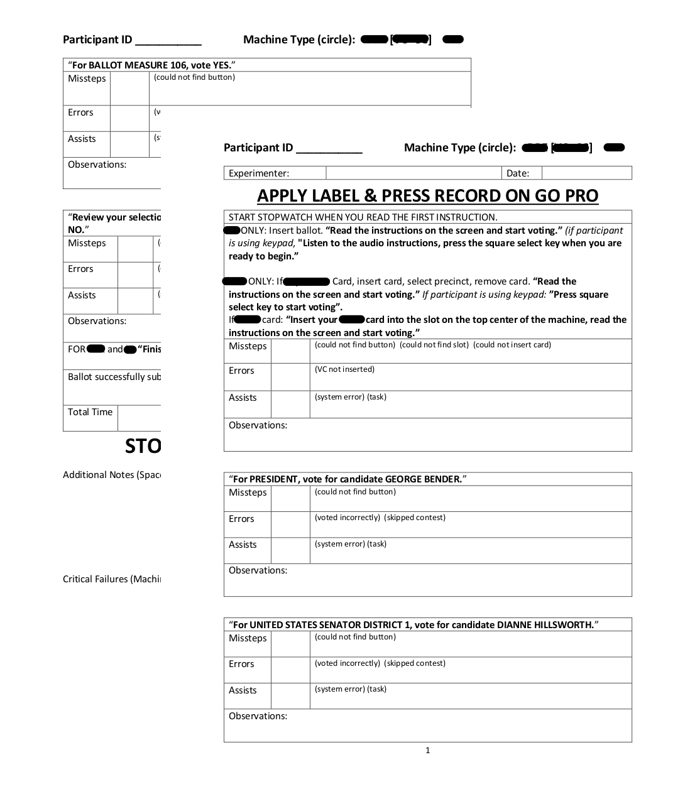

Voting Machine Usability
Due to the confidentiality of this project, details pertaining to the technology tested and the UX solution have been omitted.
SUMMARY
One of the first assistantships I earned as a graduate student was on a project assessing the usability of voting machines. I created testing materials and lead seven undergraduate researchers as we observed users’ interactions with the machines. I had the pleasure of recruiting and interacting with people with low vision, people who are blind, and people with limited mobility of the upper extremities in a research setting, a challenging but extremely rewarding opportunity.
PROBLEM STATEMENT
It is important that voting be as simple and intuitive as possible. Voting methods have changed considerably over time, from simple pen-and-paper to mechanical lever, to digital touch-screen, and one would expect the advent of new machines to improve the process. Our objective was to test the usability of the new and emerging machines of Election Systems & Software.
DATA COLLECTION
Figure 1. Observation sheet used in data collectionBecause the test protocol had to be closely aligned with the requirements of the U.S. Election Assistance Commission (EAC), the data was collected in a systematic fashion that resembled previous voting machine usability research efforts. However, I chose the structure of the experiment and developed the supporting materials (including figure 1).
After the machine tasks were complete, we led each participant through a post-survey and debrief/interview.
DATA ANALYSIS
Using RStudio, I and a handful of research assistants analyzed the collected data. T-tests and confidence intervals were generated by population and by machine type according to various research questions generated internally and by the product manufacturer. Additional data analysis was done on the closing comments from the post-survey. Unfortunately, while I played a role in collecting this data, I did not prepare the thematic analysis.
CONCLUSIONS
Results of the usability test will be made publically available through the EAC website. Due to the confidentiality of the testing, I cannot provide any additional comments on said results.
CHALLENGES
- Fast-paced environment
- Not interfering with task completion
- Interacting professionally and politely with a broad participant pool
One of the most challenging things about this project was the speed of it. I was a new graduate student at the time, and I had only collected data prior to this. We developed procedures and materials, ran 128 usability tests, and wrote four highly-structured reports within four months. However, I feel that because of the early introduction to industry speeds of research, I am better equipped to handle fast-paced environments moving forward.
I consider myself a highly-empathetic person, which makes any type of user test an experimenter test of self-discipline. I constantly find myself stifling a nod or an “mhm” when someone is supposed to be trying to learn a software on their own. This was especially difficult due to the population we sampled, at least until one of my participants explained that she likes to be able to figure things out on her own. “Just because I happen to be blind doesn’t mean I need special treatment!”
Prior to my involvement in this project, I had only ever been a researcher of aging farmers and young university students. I had perfected my persona for those situations, but I was terrified, at first, of finding a good balance when working with persons with varying levels of sightedness. Luckily, we had a lot of really good, really willing participants who understood any experimenter apprehension and were as patient with us as we were with them. Voting is a large issue for the blind community because it highlights the voter’s blindness. If there is no accessible option, the voter must be accompanied by at least two people to a separate room, where one records his or her answers and the other person verifies that no shady-business goes on. Therefore, every visually-impaired participant was very eager to share their experiences and help make voting easier for themselves and others like them.